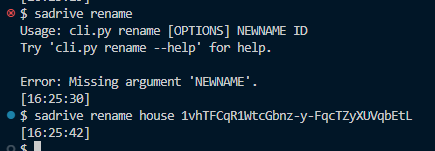
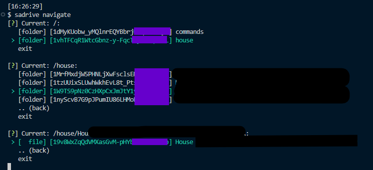
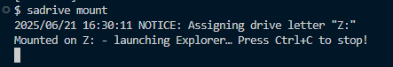
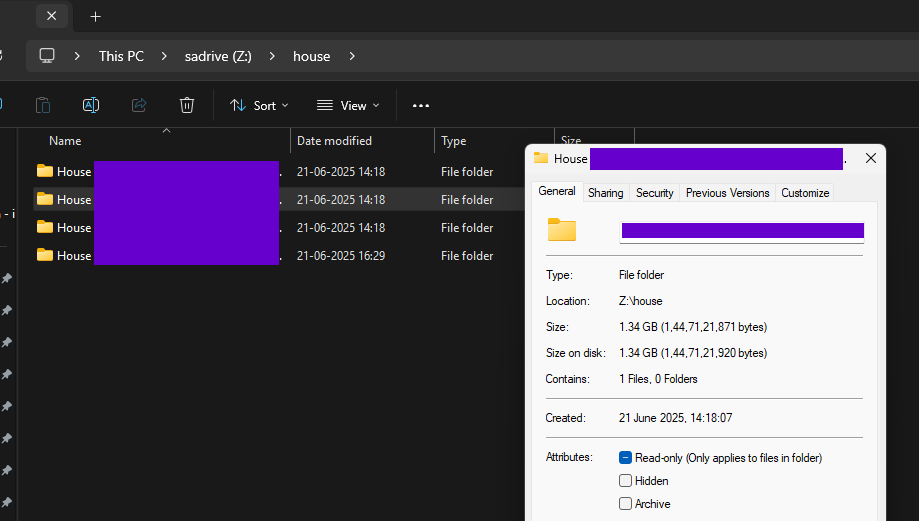
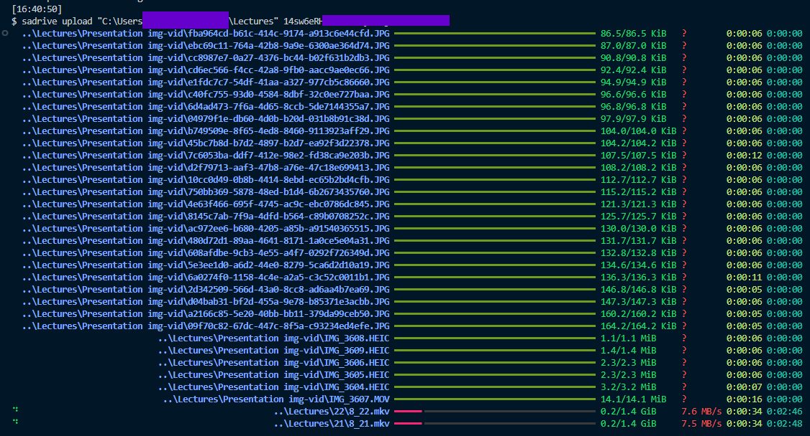

Sadrive Documentation#
SA Drive (Service Account Drive)#
This project unifies the storage of multiple pre-April 15 2025 Google service accounts (each with 15 GiB) into one logical drive, overcoming per-Drive limits and allowing uploads of very large files (> 14.7 GiB) with progress and parallel transfers.
New service accounts created after April 15 2025 no longer receive 15 GiB each; this tool targets existing accounts only.
Why is it needed#
Google Team Drives (Shared Drives) cap out around 100 GiB. By aggregating many service accounts, Sadrive provides a familiar “Drive” interface backed by ~15 GiB chunks.
How It Works#
You provision N service accounts (up to 100 per project).
Sadrive’s CLI detects which account has enough free space.
Files are routed and uploaded automatically—no more manual juggling.
Key Benefits#
Mount your aggregated drive locally for read-only access
Parallel uploads & downloads (via gclone)
Automatic splitting of files > 14.7 GiB
Progress bars, ETA, and fuzzy search built in
Statically typed codebase with full type hints
Examples#
sadrive
sadrive config set-dir <path>
sadrive rename newname file/folderid
sadrive navigate [optional_folderid]sadrive share file/folderid
 sadrive mount(read‑only filesystem)sadrive delete file/folderid
sadrive newfolder name [optional_destination_id]
sadrive upload path/to/upload [destination_folder_id](If no destination ID is given, uploads to the parent in `config.json`.)sadrive download folder_id path/to/destination [--transfers int](–transfers = max parallel downloads)
Contents:
- Command-Line Interface
- API Reference
- sadrive.cli module
- sadrive.commands package
- sadrive.commands.config module
- sadrive.commands.db module
- sadrive.commands.delete module
- sadrive.commands.downlaod module
- sadrive.commands.manipulation module
- sadrive.commands.navigate module
- sadrive.commands.upload module
- sadrive.helpers package
- sadrive.helpers.dbf module
- sadrive.helpers.drive module
- sadrive.helpers.utils module